MPA
微带线馈电的微带贴片天线
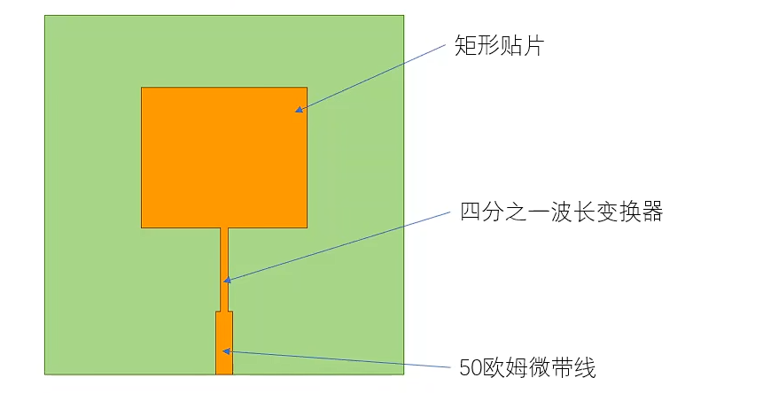
仿真前的数值计算
以下的代码，有侧馈形式的微带贴片天线很完整的设置流程，使用不同介电常数和厚度的板子，通过代码中的经验公式，都可算出仿真时对应频率所需要的宽度，长度，电阻等等。
以下是在matlab当中运行的代码：
1 | c = 3e8; |
运行结果如下：
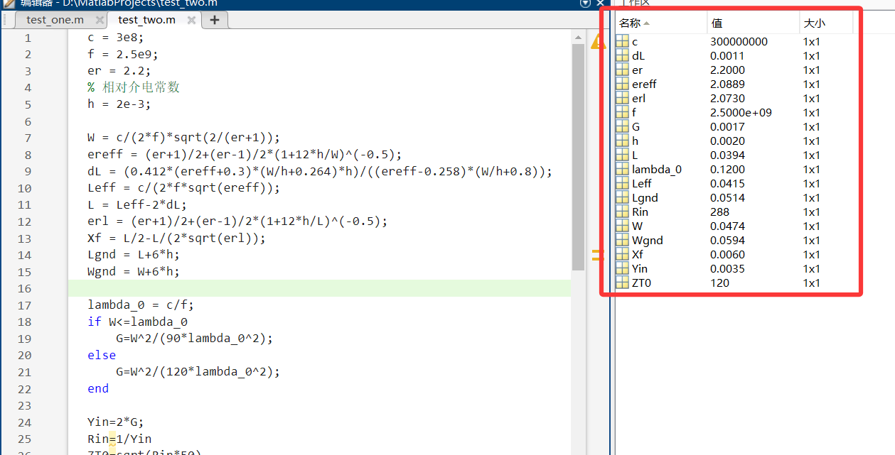
宽度W：47.4mm 长度L：39.4mm 贴片部分的输入阻抗Rin: 288Ω 此时就需要阻抗变换器ZT0:120Ω
上述阻抗变换器也就是说，四分之一波长变换器那里是120Ω
仿真过程
设置介质基板
点击侧栏当中的Box1，在Material属性后面，选择Edit，进行板材的选择。
这里选择自己定义板材：(点击Add Material)
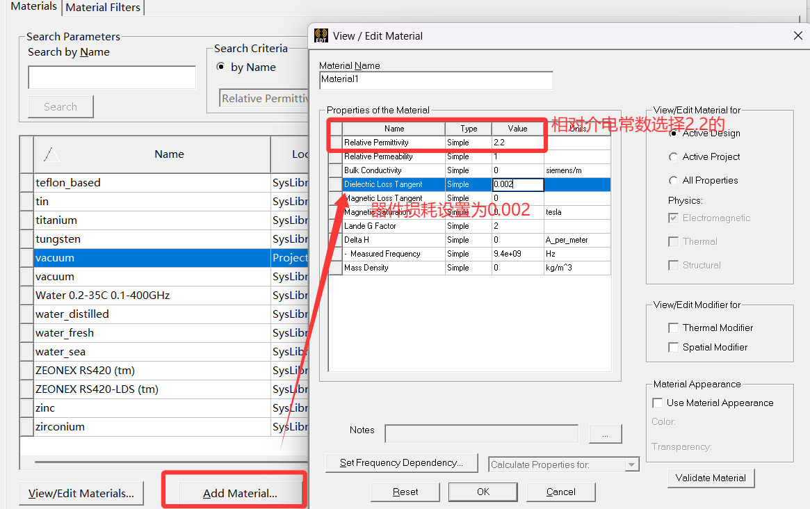
板材坐标设置
在设置坐标的时候，就设置x负半轴，y负半轴，z=0的那个象限，这样的话，方便坐标的确定。
再者就是将坐标用变量代替，方便后续仿真过程当中修改
举例就是说本次设置的天线，上半部分的矩形贴片，长度用L表示，宽度用W表示，厚度用h表示。
我要将矩形贴片的下边与Y轴重合，这时就要设置起点的x轴坐标为-L
我要将矩形贴片关于x-z面对称，那么此时我就要将起点坐标设置为-W/2，z轴坐标为0。
上述计算结果当中，L：39.4mm，W：47.4mm，厚度使用2mm。那这里的板材就是用100mm的。

微带线，四分之一波长变换器，贴片，激励端口坐标设置
通过在线工具，输入板材的信息，就可以获得以上大致的长和宽，这样就能设置坐标了。
50Ω微带线通过计算，得出宽Wf为6.012mm，长度Lf为28mm
四分之波长变换器的宽度Wm为1.115mm，长度Lm为22.76mm
微带线：
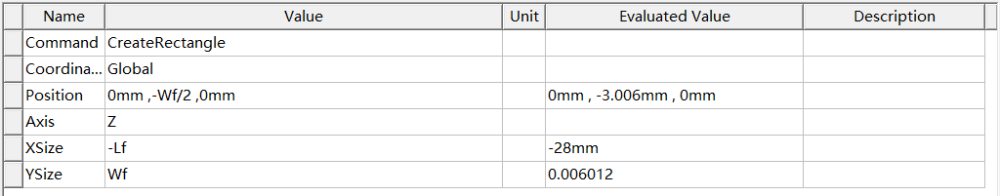
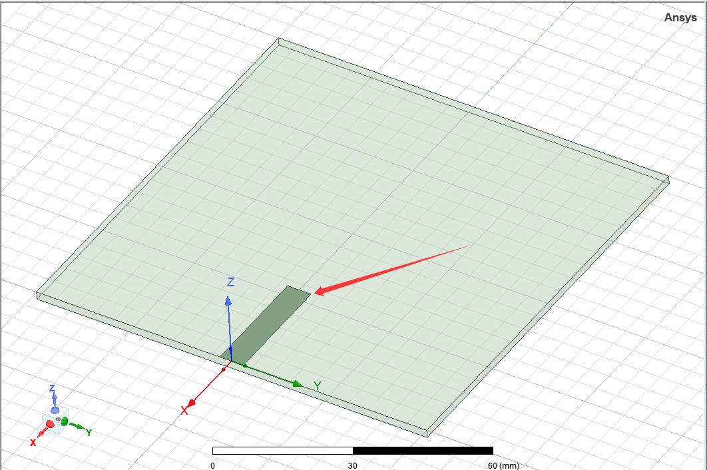
四分之一波长变换器
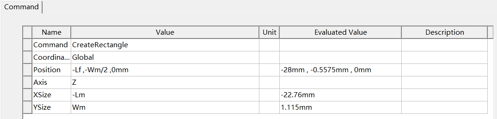
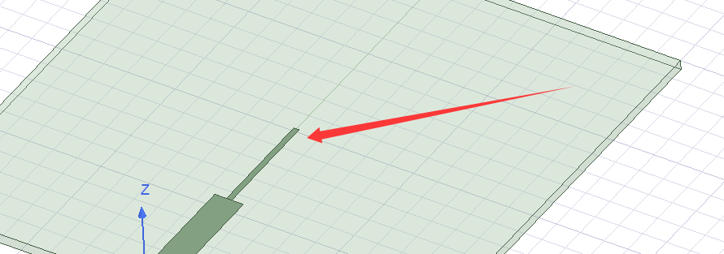
端口激励设置
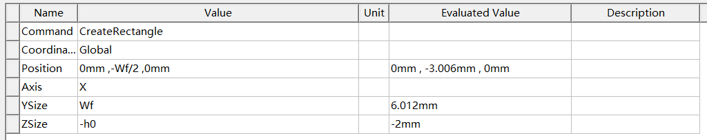
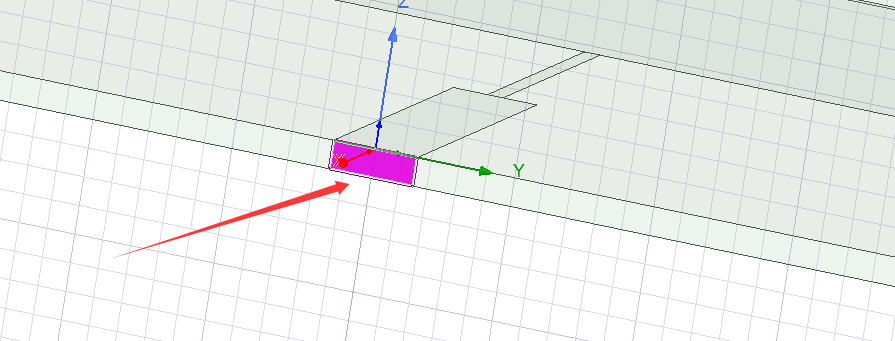
贴片坐标设置
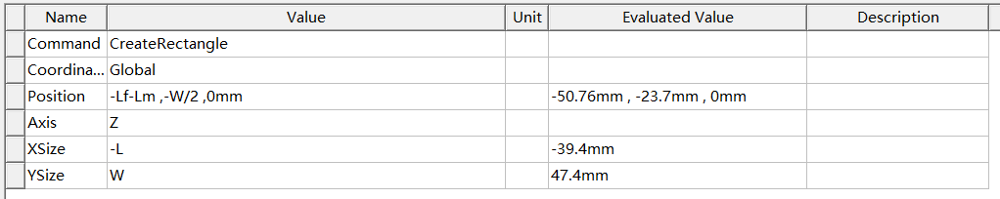
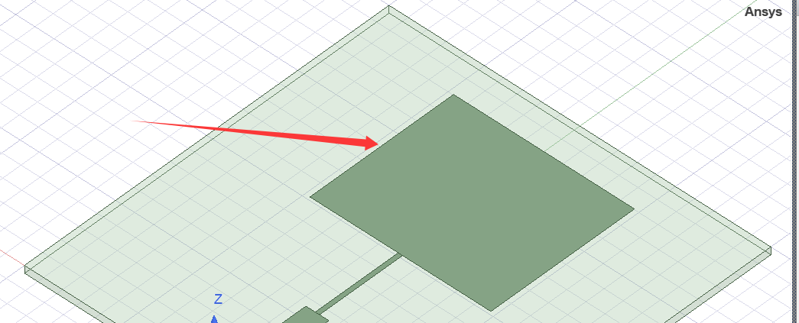
画底板
选择底面，右键点击Edit->surface->Creat Object From surface。右边就会生成一个实体，
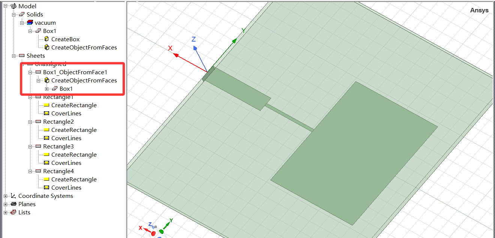
此时底面和介质板同样大小，非常方便。再者，修改介质板大小的时候，这个底面也会自动更改，适应介质板。
将底面和上面的馈线设置为电导体
将端口设置成Lumped Port激动端口
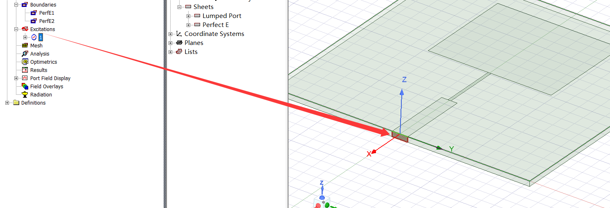
设置积分线
这里总是画不上积分线，选择激励端口之后，发现总是出现References conductors from Terminals的窗口，这是因为： HFSS的设计类型（Solution Type）设置问题。当你选择 Terminal模式 时，HFSS会使用不同的端口设置逻辑。问题根源：Solution Type设置错误。
HFSS有三种求解类型：
- Driven Modal（驱动模）→ 需要选择这个
- Driven Terminal（驱动终端）
- Eigenmode（本征模）
以下是Driven Terminal 和 Driven Modal的区别：
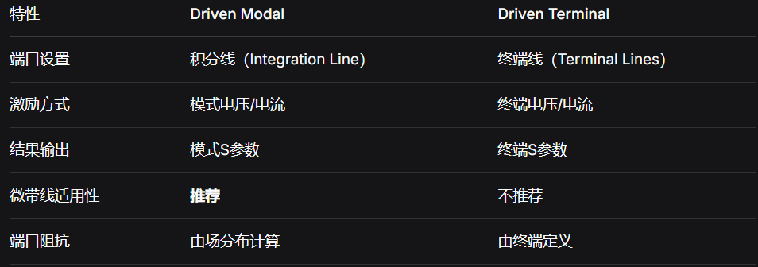
这里再增加一些知识，也就是wave port 和 lumped Port之间的区别和适用场景
Wave Port是”算出来的”端口，Lumped Port是”指定出来的”端口。
Wave Port（波端口）
- 物理本质：模拟无限长传输线的横截面
- 计算方法：先求解端口处的场分布模式（TE/TM模），再用这个场作为激励
- 就像：在河流的横截面上测量水流速度和方向
Lumped Port（集总端口）
- 物理本质：在两点之间施加电压或电流源
- 计算方法：直接假设两点之间有电压差，不关心具体场分布
- 就像：用电池直接连接两个点，不考虑电场怎么分布
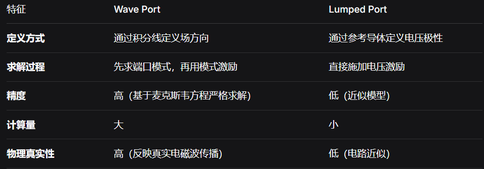
必须用Wave Port的情况 ✅
- 传输线结构（这是最主要的应用）
- 微带线、带状线、共面波导
- 同轴线、波导
- 任何有明确传输模式的结
- 需要精确S参数时
- 天线匹配网络设计
- 滤波器、耦合器
- 高速电路SI/PI分析
- 端口处有复杂场分布时
- 多模波导
- 非TEM模传输
可以用Lumped Port的情况 ⚠️
- 集总元件建模
- 芯片内部连接
- 简单导线连接
- 快速原型验证
- 概念验证，不需要高精度
- 初始参数扫描
- 非传输线结构
- 两个金属片之间的间隙
- PCB上的过孔连接
绝对不能用Lumped Port的情况 ❌
- 天线馈电网络（你的案例）
- 微波元件设计
- 任何涉及波传播的场景
然后，我们再继续画积分线。
选择Lumped Port（集总）激励端口，50Ω设置是归一化阻抗
- 不是端口的实际阻抗（实际阻抗由仿真计算得出）
- 是S参数归一化的参考阻抗
- 所有S参数都以这个阻抗为参考计算
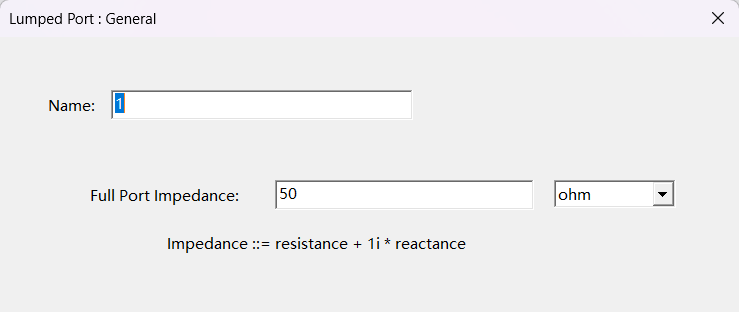
再沿z轴正半轴画积分线：
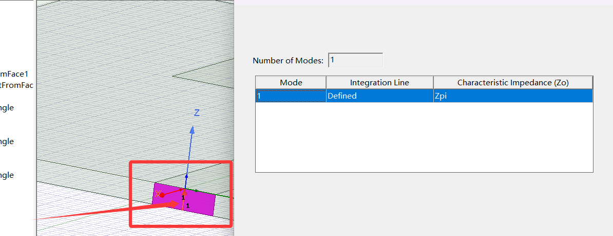
画空气盒子
空气盒子距离模型四周应当是大于四分之波长的。3GHz的波长是100mm，那么2.5GHz的波长是120mm。这里设置空气壳子的绝对距离Absolute Offset为35mm>120/4。
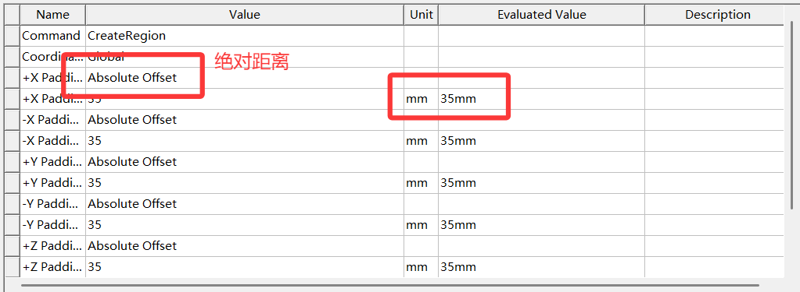
设置边界辐射
设置辐射边界是为了模拟电磁波在自由空间中的无限传播。
选择空气盒子，设置边界条件assign boundary->radiation。
添加求解设置Driven Solution Setup
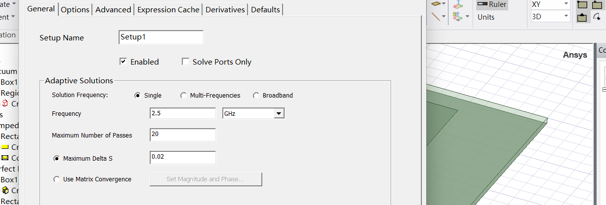
这里设置中心频率为2.5GHz，下面的maximum Number of passes为20，maximum Delta S为0.02
是HFSS自适应网格剖分收敛的核心控制参数！ 它们决定了仿真何时停止以及结果的精度。
仿真流程解析
1
2
3
4
5
6# HFSS自适应求解过程
Pass 1：用粗糙网格计算一次 → 得到S参数(S1)
Pass 2：基于场分布细化关键区域网格 → 计算得S2
Pass 3：进一步细化网格 → 计算得S3
...
Pass N：直到满足收敛条件1. Maximum Number of Passes（最大迭代次数）
1
2
3
4定义：最多进行多少次网格细化计算
你的设置：20次
含义：即使没达到收敛精度，最多算20次就停止
作用：防止无限计算（安全阀）2. Maximum Delta S（最大S参数变化量）
1
2
3
4定义：相邻两次pass之间S参数的最大变化量
你的设置：0.02
含义：当所有S参数的变化都＜0.02时，认为收敛
作用：精度控制（质量目标）添加扫频设置，选择Analysis->Setup1
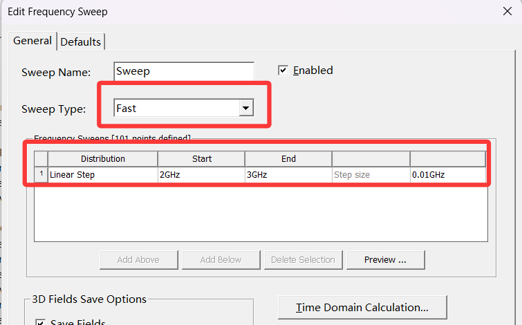
Sweep Type中扫频模式的区别：
1. Fast（快速扫频）
1
2
3
4
5
6
7
8
9
10本质：插值扫频，基于少数几个频点的精确解，插值得到整个频段
工作原理：
1. 在关键频点进行全波求解（自适应网格）
2. 用有理函数插值得到其他频点
3. 自动检查插值精度
特点：
- 速度最快（通常比离散扫频快5-10倍）
- 精度可控
- 适合平滑响应系统2. Discrete（离散扫频）
1
2
3
4
5
6
7
8
9
10本质：在每个频点都进行全波求解
工作原理：
1. 对每个指定频点独立求解
2. 每个点都进行自适应网格细化
3. 结果最准确，但最慢
特点：
- 速度最慢
- 精度最高（黄金标准）
- 适合有谐振、突变响应的系统3. Interpolating（插值扫频）
1
2
3
4本质：Fast扫频的旧名称（现在统一叫Fast）
在旧版本HFSS中叫Interpolating
新版本已统一为Fast
两者本质相同这里先择Fast快速扫频是因为贴片天线的S参数是平滑变化的函数。
Distribution选项详解：
1. Linear Step（线性步进）
1
2
3
4设置方式：指定起始、终止频率和步长
示例：Start=2GHz, Stop=4GHz, Step=0.01GHz
产生的频点：2.00, 2.01, 2.02, ..., 3.99, 4.00 GHz
特点：频点均匀分布2. Linear Count（线性计数）
1
2
3
4设置方式：指定起始、终止频率和点数
示例：Start=2GHz, Stop=4GHz, Count=201
产生的频点：自动计算均匀分布的201个点
特点：控制点数而非步长为什么贴片天线要用Linear Step，是因为：
1
2
3
4
5
6
7
8
9
10# 天线设计需要：
1. 谐振点附近需要高分辨率
2. 离谐振点远处可以低分辨率
3. 但为了后处理方便，常采用固定步进
# Linear Step的优点：
- 直观：我知道每个频点的间隔
- 标准：论文、报告常用固定步进
- 兼容：与实测数据对比方便
- 控制：确保关键区域有足够密度点击validation check，运行器件
添加边界设置
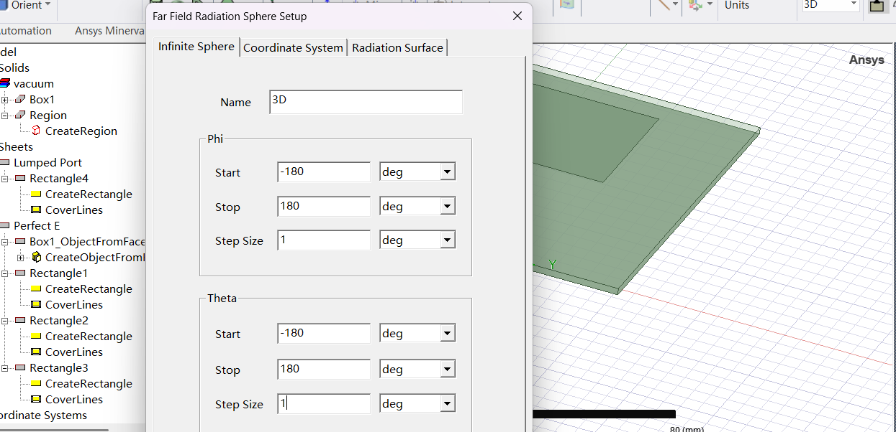
空气盒子（Air Box）和远场辐射球（Far Field Sphere）的区别
1
2
3
4
5
6
7
8
9
10
11
12
13
14
15
16
17
18
19
20
21
22
23
24空气盒子（Air Box）
是什么：三维物理空间
作用：模拟电磁波传播的实际环境
物理意义：有限空间→无限空间的映射
设置位置：包裹整个天线结构
边界条件：Radiation或PML
远场辐射球（Far Field Sphere）
是什么：数学计算网格（不是物理结构）
作用：定义远场计算的方向和范围
物理意义：远场数据采样点
设置位置：理论上的无限远球面
边界条件：无（纯计算设置）
例如：
# 空气盒子 = 游泳池本身
- 大小、形状、边界材料决定水波如何传播
- 太小：水波反射，测量不准
- 太大：浪费空间
# 远场球 = 测量仪器
- 在特定位置和方向测量水波强度
- 不改变水波本身
- 只是记录数据Theta（θ） - 俯仰角
1
2
3
4从+z轴开始测量
θ=0°：天线正上方（法线方向）
θ=90°：天线侧面（水平面）
θ=180°：天线正下方Phi（φ） - 方位角
1
2
3
4
5在xy平面内从+x轴开始测量
φ=0°：+x方向
φ=90°：+y方向
φ=180°：-x方向
φ=270°：-y方向1
2E面（电场面）：包含电场向量和最大辐射方向的平面
H面（磁场面）：包含磁场向量和最大辐射方向的平面c查看天线的三维方向图可视化！
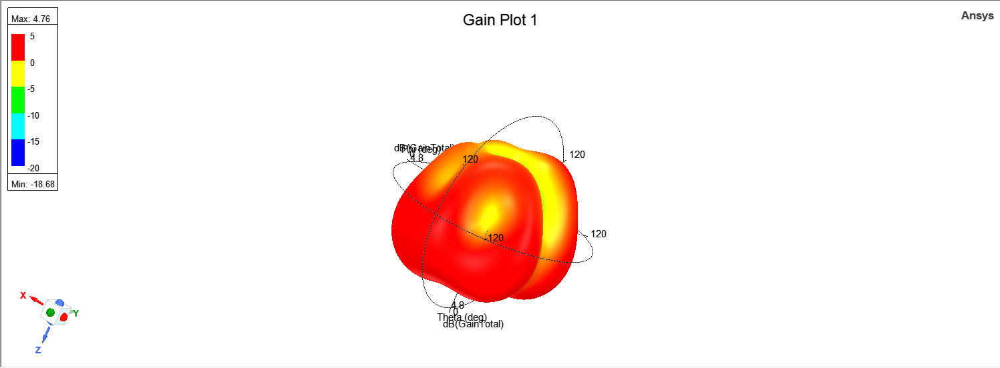
很显然，这是一个失败的实验。但是唯一成功的是，这个才是真正的苹果长相，那些看起来无比光滑的，根本就不能叫红苹果图。
查看S参数（rectangular plot）
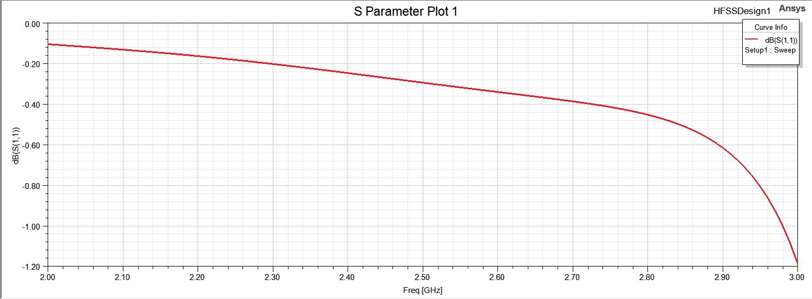
显然，这个S参数也是离了个大谱！！！
查看E面和H面的结果
添加边界条件：
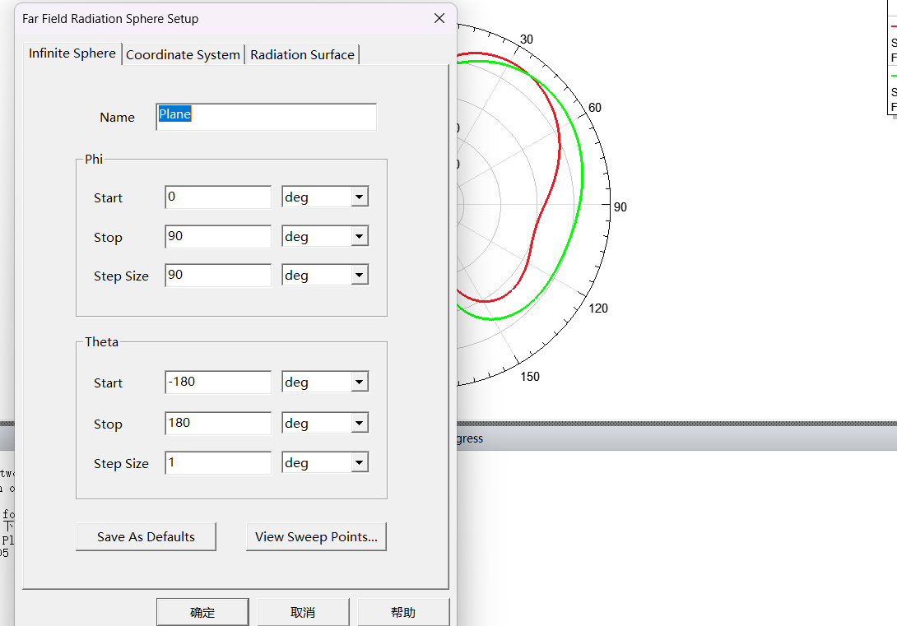
查看结果Radiation Pattern：
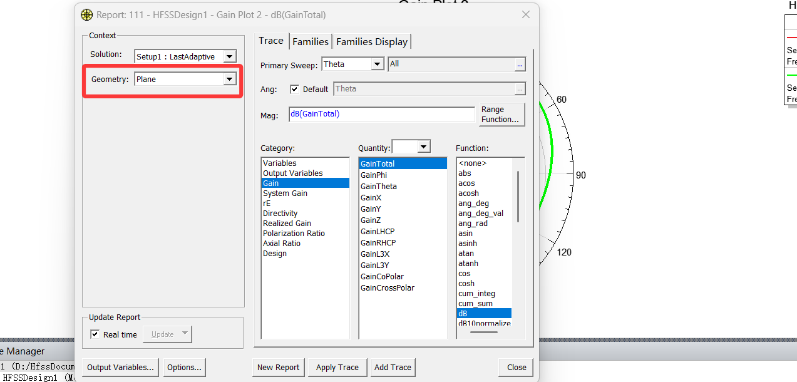
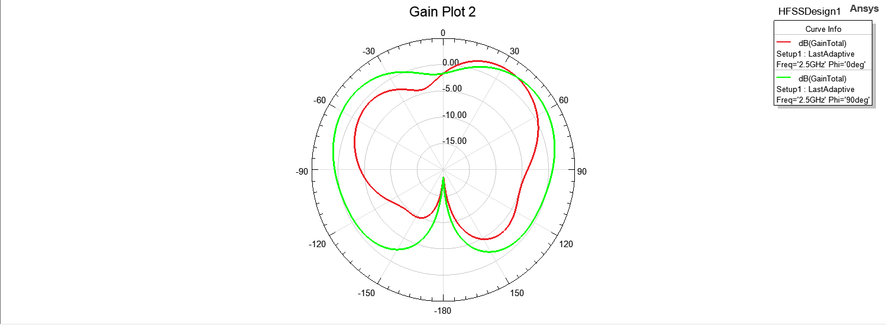
这里有一点挺好的，就是Phi=90°的时候，E面还是听对称的！！！
增加一个地板的长度试一试
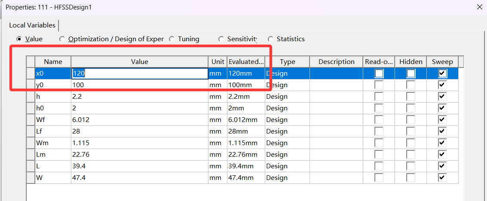
地板加上20mm，自此仿真，看看有什么效果。
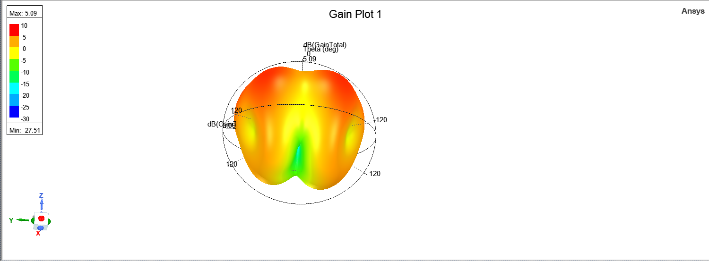
这次这个像屁股
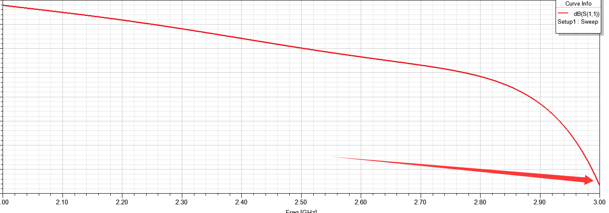
这次尾巴上来了一点
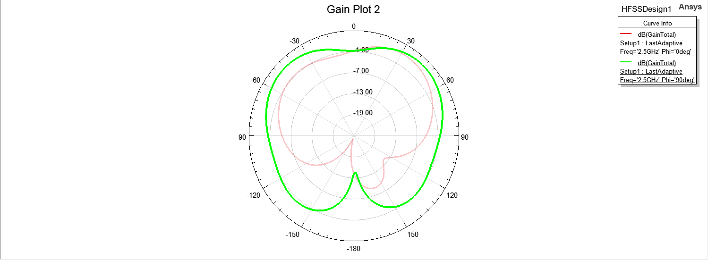
E面依旧稳定，H面依旧不知道是啥。
总结
通过这次仿真，又学到了不少东西。别管这个微带线馈电的微带贴片是否成功，最起码累到了。明白了许多HFSS软件当中不明白意思的按钮，还有操作，操作的含义等等。归结一点，不明白原理就是因为书看少了。多听课，多看书。